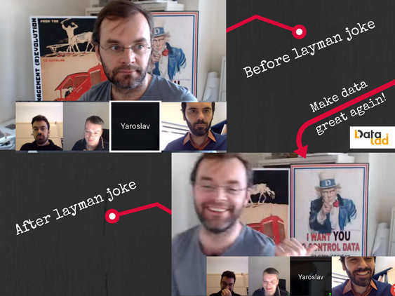
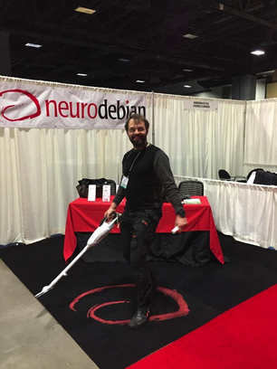
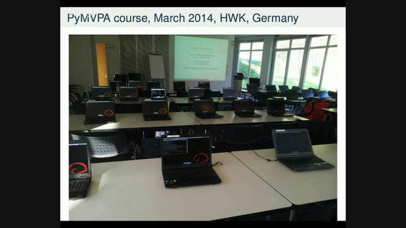

|
Neuroimagers face an ocean of software tools that have the potential to make research transparent, sharable, and collaborative. Open science is on the horizon, and we could use some instructions on how to ride the open software wave. We couldn’t think of better software surfers than Michael Hanke and Yaroslav Halchenko, the creators of NeuroDebian. NeuroDebian is a curated ecosystem of neuroscience research software that runs on virtually everything. It originally started as a personal convenience tool in 2005, then went above and beyond its initial purpose, finally transforming into a widely-used and globally accessible platform. AK: What is NeuroDebian? Can you briefly explain it in layman's terms? Michael: NeuroDebian was started almost 12 years ago, and was originally intended to provide correct software ecosystems. This is not only about shipping software to another computer, but a full system integration effort, so that independently developed software can work together in one system. NeuroDebian is basically a front for the Debian system, a decentralized and democratic effort of individuals working together to develop the universal operating system. Think of it as a neuroscience capable operating system. Yaroslav: Let me add a really layman definition. It’s your cellphone with the app store, but it is not just the cellphone. It can be your laptop, PC or even a computing cluster. NeuroDebian and Debian provide this whole turn-key platform where you have an app store offering accessible software. All that software is already available for you, and a dockerfile or singularity file can describe which ones to install. I think we cannot get more layman than that. Michael: Did you say lame?  Aftermath of the layman joke with the sneak preview of a new data control platform by Yaroslav and Michael. AK: NeuroDebian was not initially intended to be a global project. Tell us about how it grew into something bigger. Yaroslav, clearing the way for reproducible neuroscience. Yaroslav: It started from scratching our own itch. We were doing our PhDs (or so we thought), and needed software to analyze data. We were Debian users already, and thought it would be cool if we could share our work: I packaged and maintained PyEPL, Michael did the same for FSL. We soon realized that there are more interests besides those two software tools. The catalyst was us joining the Jim Haxby Lab at Dartmouth. In a frenzied week in 2009, we packaged lots of potentially useful software. Then we established NeuroDebian, as it is known now. AK: The spirit of free software is at the heart of NeuroDebian. It is a community driven development. How do you manage all those remote contributions? Michael: Yes, it is a global enterprise with many people contributing to it. But it is also, given its size, complexity and the amount of effort that goes into it, by far not international enough. For the amount of impact it has, it is actually a fragile enterprise. It has taken up considerable time and effort from researchers, even though the outcomes are not going straight into their PhD or research projects. Some software is more difficult to integrate than others. I don’t want to single any out, it just symbolises the whole situation and reflects the world we are in. Tools are kept behind closed doors until the people who developed them are properly credited. Yaroslav: In comparison to where we were 12 years ago, we are now in a very different ecosystem. In getting there we used many of the concepts of open science and open software, such as continuous integration. Without that we’d be fixing bugs for every release. To ensure scalability, we encourage people to test their software, and even though this is not directly related to NeuroDebian per se, it ensures that software remains working on all systems. Another angle is that we share the responsibility. Michael packages something and I package something else, and then we share it so that anyone can benefit. The same goes for the teams within Debian (Debian-Med, Debian-Science) which we are also part of, and we maintain many packages together with those teams. We are not duplicating anyone’s effort. Other team members do their part and we often just borrow relevant neuroscience research packages and backport them for all Debian and Ubuntu users. Everyone is happy at the end of the day. Once again, it would be impossible if these were done in an independent fashion. AK: We hear about backporting. Is there a simple explanation for that? Yaroslav: It takes a lot of effort to stabilize a release. That’s why the most stable Debian releases are usually the most outdated ones. This takes us back to Michael's comment about integration. When you put together software that is supposed to work together and then you attempt to stabilize it, eventually it remains stable over years. But research software has different needs. Researchers want to adapt new methods as quickly as possible. So, we take a stable Debian release and put new software versions in it. If we were to upload fresh tools to the unstable versions of Debian and wait until it becomes stable, it would take too long. This is the point where backporting comes in handy. It allows us to provide the most up-to-date software for all Debian and Debian derivatives, such as Ubuntu. AK: The name gives the impression that NeuroDebian is exclusive to the Debian OS. What about researchers used to OSX or Windows? Yaroslav: We saw cases where people installed NeuroDebian on a virtual machine and after a while realized that they keep their OSX or Windows in the background all the time. So they installed Debian as dual-boot at the beginning and then wiped out anything else but Debian. There are other people who prefer to keep their original OS, because they need to use Microsoft Word. You can even run NeuroDebian within NeuroDebian. AK: How is NeuroDebian maintained, where do the resources come from? Yaroslav: First it was our advisors. They allowed us to pursue this instead of our research. Some projects provide a small proportion of the funds needed to support NeuroDebian. But overall, NeuroDebian never received dedicated funds as a project. Whenever we apply, there is always one reviewer who says “this effort matches Friston’s brilliancy of SPM” , and another who says “it is just some packaging, who cares”. Michael: I think we should name drop here. Yaroslav’s advisor was Stephen Hanson, who paid for this for years. My advisor was Stefan Pollmann, who did the same. After many unsuccessful applications, I stopped thinking about grants. Once we wrote a grant where we had 40 letters of support, but reviewers questioned the letters’ legitimacy. Next time we gave them twice as much, and that was also not enough. The best comment we received was ‘this doesn’t fix any disease, try elsewhere’. Most of the stuff we do cannot be tied to a single purpose. We are not the ones achieving it, we are enablers. If any blog readers have recommendations, or are sitting on a pile of money, please contact us! Very recently, the CBBS research center in Magdeburg has started funding work that relies heavily on NeuroDebian and thereby helps to maintain it for everyone else, too.  Ready to attack large datasets. PyMVPA course, HWK, Germany, 2014 AK: We know custom installations of neuroscience research software can be painful. How easy is it to install them on NeuroDebian? Michael: It really depends on the complexity. You can have a really easy installation after downloading gigabytes of binaries that are pre-compiled for your system. If you want to install it again, you need to repeat the same steps. However in Debian, you have all the benefits of automatic upgrades. You would say “I use 150 software packages on this computer and I need to download and update all of them”. The more complex the system you use for your research, the greater the benefit of using a package manager system. Yaroslav: Do you remember how difficult it is to install apps on your phone and maintain them? Not really! You just click, install them and they keep updating themselves automatically. This is primarily the same thing. Once your research software is installed you don’t need to think about where it comes from or how to update it. It just gets done and it works. Michael: Most people do not have administrative privileges on the hardware or the execution environments they use. Think about institutional clusters, think about workstations managed by someone else. In general, you need to call a system administrator and say which software you need installed. If you are on Debian, this only takes a few minutes. AK: Most of the processing pipelines have a heterogeneous working environment with strict version dependencies. This is a serious threat for sustainability and reproducibility. How does NeuroDebian tackle this problem? Yaroslav: A while ago, we created the NeuroDebian virtual appliance. Downloading this virtual machine image, different people can have the identical environment. There are additional projects that we can benefit from. One of them is http://snapshot.debian.org/, which takes snapshots of the entire Debian archive repository twice a day. So you can recreate any Debian system you used in the past. We now do the same thing for NeuroDebian, although it is not fully public yet. This way, if you know that your software environment previously existed, you can re-establish it. It can also be used to validate the compatibility of your current system. We are pursuing this through the ReproNim project that can track versioning for even more crowded environments. Michael: You can keep using the script-based generated environment for as long as the underlying components exist. But in my experience, many claims of strict version dependencies are convenient excuses, but not real dependencies. Often it’s because somebody spent time manually assessing whether a software works as it should. That’s why they have that strict dependency, because they are not willing to go through that manual effort again. In this case you are following a trust and hope model. No manual validation that is done on one machine scales to the other. Remember the paper showing surprising differences in Free Surfer outputs depending on the execution environment. You need high level tests for machine based verification so you can make sure that when you ship it to your users, it will work. NeuroDebian offers solutions to this problem by enabling inclusion of build-time and run-time tests. AK: How can developers get their software into NeuroDebian? Yaroslav: You should email us to start with, or email the Debian mailing list. For some people who reached out to us, we packaged and maintained their software. Others packaged it themselves and gave it to us to review and upload. So, there are multiple ways to achieve this. But if you mail us first, we can figure out the optimal way. Just remember, if it is for us to package, it might take longer because of the previous questions. The Michael Hanke test: if you can answer these questions, you are ready to make first contact with the NeuroDebian team Michael: There are so many people and so many different projects in this field, not necessarily limited to neuroimaging. It doesn’t matter who you contact, as long as your initial e-mail contains all the relevant information. There are key questions you should be able to answer immediately before you contact them. AK: How do you see the future of open science? Which role will NeuroDebian play along the way? Michael: I am happy to say that open science is the present, but surely it is also the future. Open Science is not just doing science in a different way, it is the only way. All the excuses people had not to be fully transparent while spending public money for public research can be justified only by the technology limitations of the past. Today, we have surpassed those limitations. There is no point in keeping things secret. In addition, open source software development is the role model of open science. If you look at collaborative coding platforms like GitHub, you will see how low the threshold is for people to work together. The same will happen with open science, and things will become much more interesting and faster. Yaroslav: Open science has already benefited from various standardization projects. For example, the open brain consent forms enable you to be open from the beginning. You don’t have to reveal all your cards, but you kind of pave your way, so that later on you can open up your research when the time is right. Michael: One thing to plug is DataLad. Many things we learnt in collaborative open source projects have manifested themselves in our Datalad project. It is the fusion of code and data, with reliable dependencies on datasets and versions. So everything we talked about regarding software can be mapped one-to-one onto data. In the future, you’ll probably see more and more efforts like this. AK: Tell us more about DataLad Michael: DataLad is for data what Git is for repositories. I use it for my students, who have no idea about Git. We use it for projects, such as the StudyForrest project. DataLad can move data in a version controlled fashion from one machine to the other: you can publish unilaterally to Github and cloud storages. In the next release, we will provide extremely enhanced metadata support, so you can make data discovery between datasets that you don’t even have. Furthermore, you can ask DataLad to watch a website! For example, if you were following an fMRI dataset, and there was a change, DataLad will let you know what has changed, why it has changed and how the code was modified. AK: Anything we did not ask? Would you like to add something? Yaroslav: Do not be silent. If you use something, say it. If you use something and it does not work, say it. I am considered one of the biggest complainers in the community, but if we keep quiet it doesn’t get fixed. Constructive feedback is very much appreciated here. This is not just about NeuroDebian. Michael: The NeuroDebian page shows the popularity statistics. There are about 300-500 machines a week that install NeuroDebian (or at least fill out the registration form). On the other hand, if the number of feedback emails goes above 10, it is considered a heavy week. There are two ways to interpret this: 1) This thing works! 2) It is a silent climate, and you are dealing with an undefined object. We don’t track people. It would be nice if people even told us that there is nothing broken.
0 Comments
Your comment will be posted after it is approved.
Leave a Reply. |
BLOG HOME
Archives
October 2022
|
 RSS Feed
RSS Feed